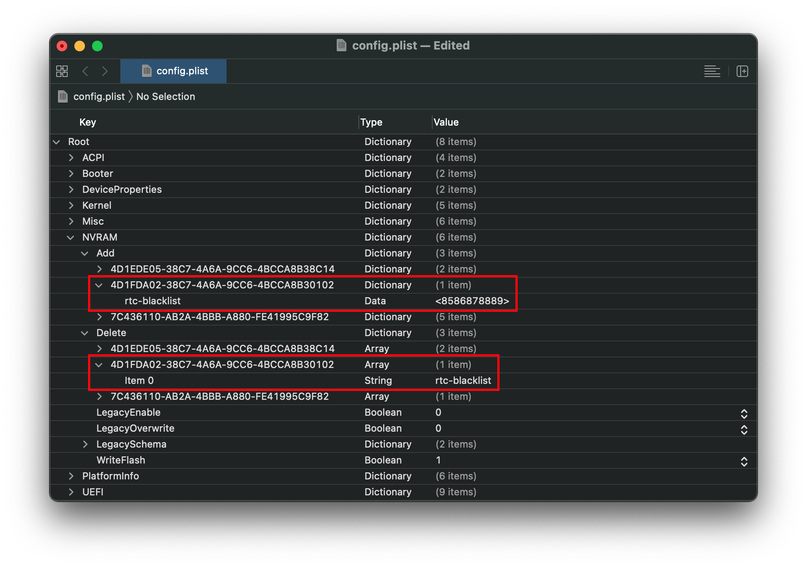

Last modified: Sun Jul 12 2020 23:16:06 GMT+0000 (Coordinated Universal Time)
Fixing RTC write issues
What this section attempts to teach is how to resolve RTC(CMOS) issues on reboot/wake with certain machines. Most commonly looking like the image below:

The reason that these CMOS and safe mode errors happen is due to AppleRTC writing to certain areas that are not supported by the hardware properly and thus resulting in panics and errors.
To get around this, we've commonly blocked out all RTC writes with these types of patches but they're not ideal for many reasons including both breaking Windows and linux and disabling potential supported regions like for power management. So with OpenCore, we've got a few options to choose:
- Patch AppleRTC from writing to specific regions
- They may break in future OS updates
- Much more difficult for the end user to patch
- Omit bad regions from being writable
- They may break in future firmware updates
- Much easier for the end user to patch
The former is actually already integrated into OpenCore with the DisableRtcChecksum quirk, but has the downfall of only blocking regions 0x58-0x59 and only working in the kernel level. Best way to know if this option is best, enable it and try. If this doesn't work, disable as it's an unnecessary patch.
With the latter, we're able to block very specific regions of our choice that match our exact model. And we're able to do this both in the kernel level and firmware aiding with hibernation support. This however will requires much more time and RTCMemoryFixup.
1. Finding our bad RTC region
For the rest of this guide, we're going to assume you've tested option 1(DisableRtcChecksum) and it didn't work. To get started, we should first introduce a few ideas:
- RTC will generally have regions spanning from 0 to 255
- These regions will be in the hexadecimal counting system so in reality will be 0x00-0xFF
- To omit bad regions, we use the boot-arg
rtcfx_exclude=00-FF- Replace
00-FFwith your bad region - Reminder boot-args is located under NVRAM -> Add in your config.plist
- This will also require you to have RTCMemoryFixup in your config.plist and EFI/OC/Kexts folder.
- Replace
- To find the bad region, we'll want to split out search into chunks
Regarding splitting out chunks, what we'll be doing is omitting chunks of RTC regions until we've narrowed down far enough to the exact spot that's bad. You can see the below on how to start:
- Split 0x00-0xFF into 2
- 0x00-0x7F and 0x80-0xFF
- Test
rtcfx_exclude=00-7Fandrtcfx_exclude=80-FF
- After testing which regions is bad, shrink even more
- Assuming our bad region was within 0x80-0xFF, we'd next split that into 2:
- 0x80-0xBF and 0xC0-0xFF
- And we go on with this pattern until we've narrowed down the bad region. Note that you will need to reboot each time to test if you're still getting CMOS/Safe-mode errors
- Also note that the final bad spot will be a range and not a singular spot.
- ie.
rtcfx_exclude=85-86instead of one singular value
Pro tip: To find a value in between 2 regions, I recommend first converting from hexadecimal to decimal, then run the below equation:
(x + y) / 2
Now lets try to use this with step 1 from earlier:
- 0x00-0xFF -> 0-255 ->
(0 + 255) / 2= 127.5
Now with 127.5, we'll round up and down to get ourselves an end and a start value:
0-127 -> 0x00-0x7F
128-255 -> 0x80-0xFF
And hopefully this can help better understand how we got our values from step 1.
2. Making the blacklist more permanent
Once you've found the bad RTC region, we can now finally add it to OpenCore itself and allow this region to also be blacklisted at the firmware level.
For this, open up your config.plist and head to the NVRAM -> Add section. Here under the 4D1FDA02-38C7-4A6A-9CC6-4BCCA8B30102 GUID, we'll want to add a new entry called rtc-blacklist
Next we'll want to add our bad RTC region as an array, so rtcfx_exclude=85-86 will become rtc-blacklist | Data | 8586. This will also work with longer ranges such as 85-89 and such. Remember to remove the boot-arg once you're set rtc-blacklist
Next ensure you have NVRAM -> Block also set as NVRAM variables will not be overrided by OpenCore unless explicitly told so.
And finally, set AppleRtcRam under UEFI -> ProtocolOverrides to true. This will block that region from being written to at the firmware level.
Once all this is done, you should have something similar to below:
